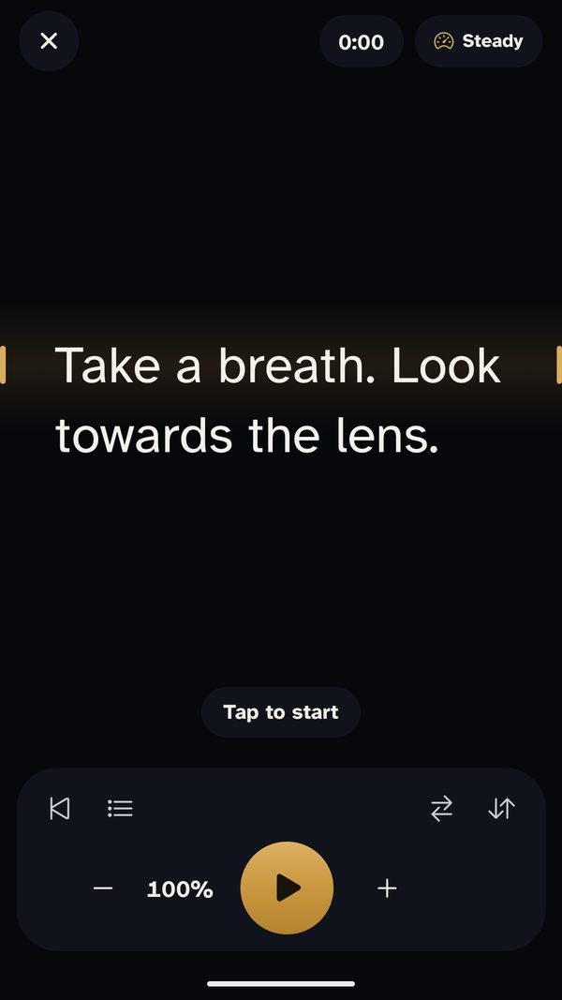
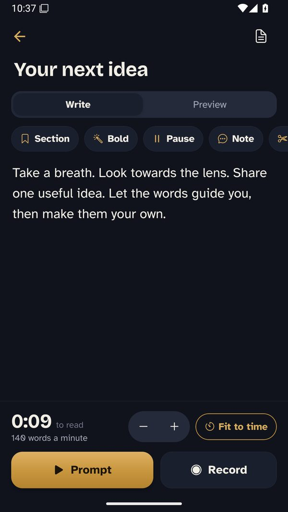
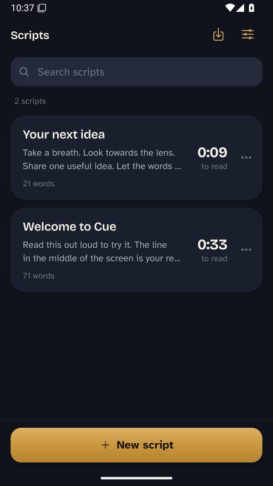
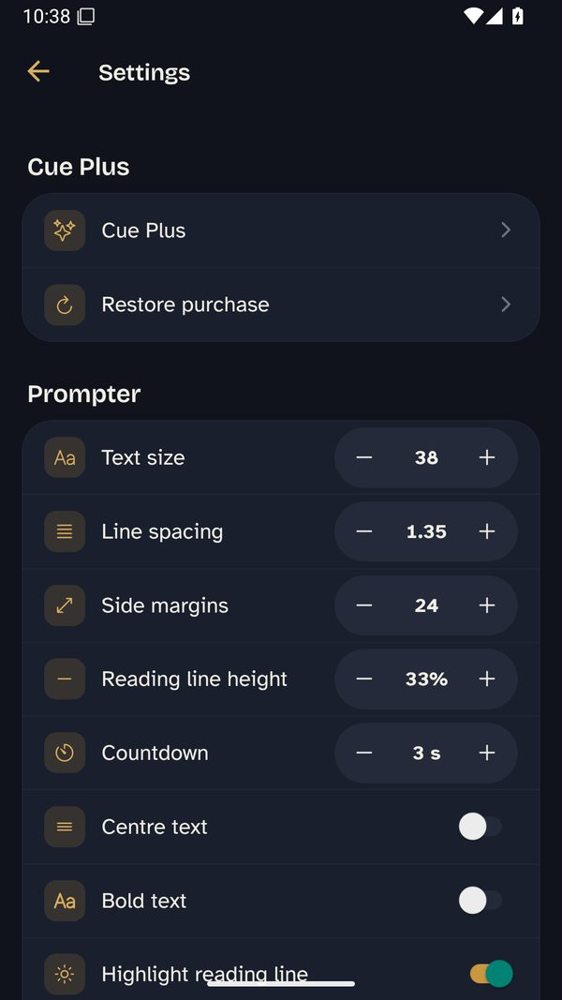

Cue: a teleprompter that waits for you
Cue: Teleprompter
Cue is a teleprompter for Android phones: write or import a script, keep the words near the camera and record takes without a watermark. Optional Voice Pace scrolls while you talk and waits when you pause.
Free download with unlimited scripts and watermark-free recording. Cue Plus is a one-time A$2.99 for Voice Pace, Voice Follow and extras. Available on Google Play (Android). Not yet on iPhone or the App Store.




Why people pick Cue
Waits for you
With Cue Plus, Voice Pace moves the words only while you talk and stops when you pause, so you aren't chasing the text.
No watermark, no subscription
Recording with the script by the lens is free and never watermarked. Plus is one payment, not a monthly bill.
Built for real takes
Mirror or flip for a teleprompter rig, use a countdown, and keep unlimited scripts on the phone.
Cue compared with typical teleprompter apps
| Cue | Typical teleprompter app | |
|---|---|---|
| Price | Free core app; Cue Plus A$2.99 once | Monthly or yearly subscriptions are common for the full app |
| Watermark on recordings | None | Common on free tiers |
| Voice-following scroll | Voice Pace and Voice Follow with Plus (one-time) | Usually part of a paid subscription |
| Free limits | Unlimited scripts; recording included | Some free tiers limit scripts or recording length |
| Ads | None | Some free apps show ads |
| Account | None needed | Some require one for syncing |
| Platforms | Android (Google Play) | Many are on both iPhone and Android |
Checked against public store listings on 10 November 2026. How we compared.
Questions
Is there a free teleprompter app for Android with no watermark?
Yes. Cue is free on Google Play with unlimited scripts, steady scrolling, mirror and flip, a countdown and video recording with no watermark. No ads and no account.
Is there a teleprompter app that follows your voice?
Cue Plus adds two voice modes: Voice Pace moves the script while you talk and waits when you pause, and Voice Follow uses on-device speech recognition to follow your words. Voice Follow depends on your device and language support.
How much does Cue cost?
The download and core teleprompter are free. Cue Plus is a one-time purchase of A$2.99 in Australia (Google Play shows your local price). There is no subscription.
Is there a free trial of Cue Plus?
Yes, an optional 7-day trial you start from the Plus screen. It doesn't charge automatically, and your scripts and steady-scroll tools stay when it ends.
Can I record video while reading a script?
Yes. Cue records takes with the script near the camera so your eyes stay close to the lens, and recordings have no watermark. Camera and microphone permission are needed.
Can I mirror the text for a teleprompter rig?
Yes. Mirror or flip the text for a beam-splitter teleprompter.